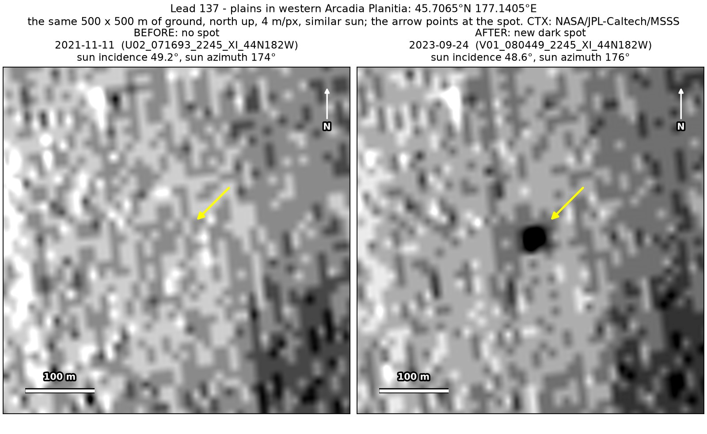
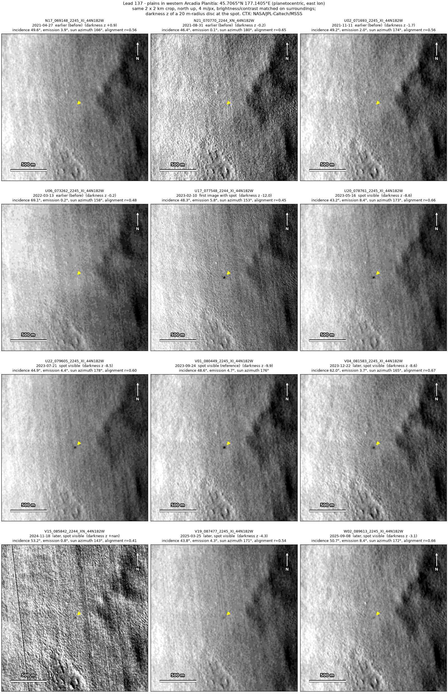
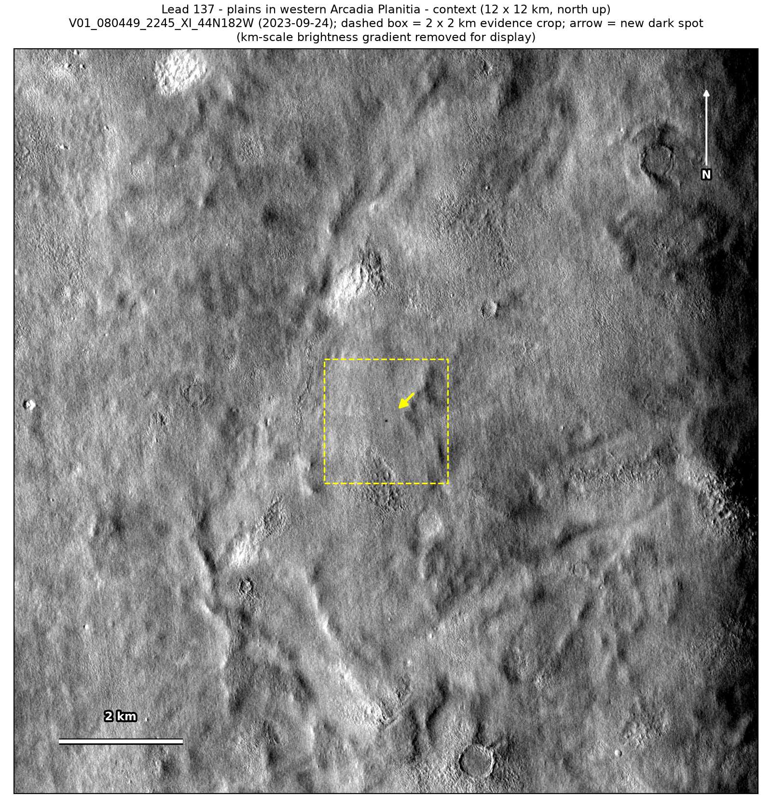

Professor of Mathematics
Paata Ivanisvili
Department of Mathematics, University of California, Irvine

← Possible new impact sites on Mars
Candidate 137: Plains in western Arcadia Planitia
Strong · roughly 90%

What changed. A compact dark spot about 30 m across appeared on smooth plains in western Arcadia Planitia between March 2022 and February 2023 and is seen in eight CTX images from eight orbits up to September 2025, fading slowly over those two and a half years.
Why it may be a new impact. Four earlier images from 2021 and 2022, one under almost the same sun as the September 2023 image, show plain ground there, while a dark feature 297 m away shows in three of them, and a compact dark spot that keeps its shape for two and a half years fits the blast zone of a small new impact.
- Location
- 45.706° N, 177.141° E
- Absent
- 27 April 2021, 31 August 2021, 11 November 2021 and 13 March 2022
- Present
- 10 February 2023, 16 May 2023, 21 July 2023, 24 September 2023, 22 December 2023, 18 November 2024, 25 March 2025 and 8 September 2025
- Size
- Compact dark spot about 30 m across (28 × 28 m in the September 2023 image, at 12 m per pixel), fading
- Confidence
- Strong candidate: roughly 90% likely to be a new impact.
- Caveat
- The strip is a CTX impact-monitoring site, so the camera team has probably already seen the spot; most of the images were taken at a coarse 12 m per pixel, which blurs it, and it is faint in the 2025 images, which is why it is rated about 90% and not more. No image from the high-resolution HiRISE camera covers it; the nearest ends 12.7 km away. Like every candidate here, it is unconfirmed: see the caveat.

